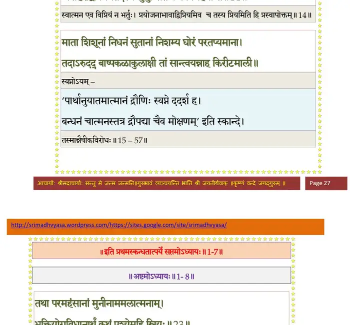

स्कन्ध 1 · अध्याय 7
श्लोक १
शौनक उवाच–
निर्गते नारदे सूत भगवान् बादरायणः ।
श्रुतवांस्तदभिप्रेतं ततः किमकरोद्विभुः।। १ ।।
निर्गते नारदे सूत भगवान् बादरायणः ।
श्रुतवांस्तदभिप्रेतं ततः किमकरोद्विभुः।। १ ।।
श्लोक २
सूत उवाच–
ब्रह्मनद्याः सरस्वत्याः आश्रमः पश्चिमे तटे ।
शम्याप्रास इति प्रोक्तः ऋषीणां सत्रवर्धनः।। २ ।।
ब्रह्मनद्याः सरस्वत्याः आश्रमः पश्चिमे तटे ।
शम्याप्रास इति प्रोक्तः ऋषीणां सत्रवर्धनः।। २ ।।
भागवततात्पर्यनिर्णय
श्लोक ३
तस्मिन् ऋष्याश्रमे व्यासो बदरीषण्डमण्डिते ।
आसीनोऽप उपस्पृश्य प्रणिदध्यौ मनश्चिरम्।। ३ ।।
आसीनोऽप उपस्पृश्य प्रणिदध्यौ मनश्चिरम्।। ३ ।।
श्लोक ४
भक्तियोगेन मनसि सम्यक् प्रणिहितेऽमले ।
अपश्यत् पुरुषं पूर्णं मायां च तदपाश्रयाम्।। ४ ।।
अपश्यत् पुरुषं पूर्णं मायां च तदपाश्रयाम्।। ४ ।।
भागवततात्पर्यनिर्णय
श्लोक ५
यया संमोहितो जीवः आत्मानं त्रिगुणात्मकम् ।
परोऽपि मनुतेऽनर्थं तत्कृतञ्चाभिपद्यते।। ५ ।।
परोऽपि मनुतेऽनर्थं तत्कृतञ्चाभिपद्यते।। ५ ।।
श्लोक ६
अनर्थोपशमं साक्षाद्भक्तियोगमधोक्षजे ।
लोकस्याजानतो विद्वांश्चक्रे सात्वतसंहिताम्।। ६ ।।
लोकस्याजानतो विद्वांश्चक्रे सात्वतसंहिताम्।। ६ ।।
श्लोक ७
यस्यां वै श्रूयमाणायां कृष्णे परमपूरुषे ।
भक्तिरुत्पद्यते पुंसां शोकमोहभयापहा।। ७ ।।
भक्तिरुत्पद्यते पुंसां शोकमोहभयापहा।। ७ ।।
श्लोक ८
स संहितां भागवतीं कृत्वानुक्रम्य चात्मजम् ।
शुकमध्यापयामास निवृत्तिनिरतं मुनिम्।। ८ ।।
शुकमध्यापयामास निवृत्तिनिरतं मुनिम्।। ८ ।।
श्लोक ९
शौनक उवाच–
स वै निवृत्तिनिरतः सर्वत्रोपेक्षको मुनिः ।
कस्य वा बृहतीमेतामात्मारामः समभ्यसत्।। ९ ।।
स वै निवृत्तिनिरतः सर्वत्रोपेक्षको मुनिः ।
कस्य वा बृहतीमेतामात्मारामः समभ्यसत्।। ९ ।।
श्लोक १०
आत्मारामाश्च मुनयो निर्ग्राह्या अप्युरुक्रमे ।
कुर्वन्त्यहैतुकीं भक्तिं इत्थंभूतगुणो हरिः।। १० ।।
कुर्वन्त्यहैतुकीं भक्तिं इत्थंभूतगुणो हरिः।। १० ।।
श्लोक ११
हरेर्गुणाक्षिप्तमतिर्भगवान् बादरायणिः ।
अध्यगान्महदाख्यानं नित्यं विष्णुजनप्रियम्।। ११ ।।
अध्यगान्महदाख्यानं नित्यं विष्णुजनप्रियम्।। ११ ।।
श्लोक १२
परीक्षितोऽथ राजर्षेः जन्मकर्मविलापनम् ।
संस्थां च पाण्डुपुत्राणां वक्ष्ये कृष्णकथोदयाम्।। १२ ।।
संस्थां च पाण्डुपुत्राणां वक्ष्ये कृष्णकथोदयाम्।। १२ ।।
श्लोक १३
यदा मृधे कौरवपाण्डवानां वीरेष्वथो वीरगतिं गतेषु ।
वृकोदराविद्धगदाभिमर्शभग्नोरुदण्डे धृतराष्ट्रपुत्रे।। १३ ।।
वृकोदराविद्धगदाभिमर्शभग्नोरुदण्डे धृतराष्ट्रपुत्रे।। १३ ।।
श्लोक १४
भर्तुः प्रियं द्रौणिरिति स्म पश्यन् कृष्णासुतानां स्वपतां शिरांसि ।
अपाहरद्विप्रियमेतदस्य जुगुप्सितं कर्म विगर्हयन्ति।। १४ ।।
अपाहरद्विप्रियमेतदस्य जुगुप्सितं कर्म विगर्हयन्ति।। १४ ।।
भागवततात्पर्यनिर्णय

श्लोक १५
माता शिशूनां निधनं सुतानां निशम्य घोरं परितप्यमाना ।
तदारुदद्बाष्पकलाकुलाक्षी तां सान्त्वयन्नाह किरीटमाली।। १५ ।।
तदारुदद्बाष्पकलाकुलाक्षी तां सान्त्वयन्नाह किरीटमाली।। १५ ।।
श्लोक १६
तन्मा शुचस्ते प्रमृजाशु भद्रे यद्ब्रह्मबन्धोः शिर आततायिनः ।
गाण्डीवमुक्तैर्विशिखैरुपाहरे त्वाक्रम्य यत्स्नास्यसि नेत्रजैर्जलैः ।। १६ ।।
गाण्डीवमुक्तैर्विशिखैरुपाहरे त्वाक्रम्य यत्स्नास्यसि नेत्रजैर्जलैः ।। १६ ।।
श्लोक १७
इति प्रियां वल्गुविचित्रजल्पैः स सान्त्वयित्वाऽच्युतमित्रसूतः ।
अभ्यद्रवद्दंशित उग्रधन्वा कपिध्वजो गुरुपुत्रं रथेन।। १७ ।।
अभ्यद्रवद्दंशित उग्रधन्वा कपिध्वजो गुरुपुत्रं रथेन।। १७ ।।
श्लोक १८
तमापतन्तं स विलोक्य दूरात्कुमारहोद्विग्नमना रथेन ।
पराद्रवत्प्राणपरीप्सुरुर्व्यां यावद्गमं रुद्रभयाद्यथा(कः)र्किः।। १८ ।।
पराद्रवत्प्राणपरीप्सुरुर्व्यां यावद्गमं रुद्रभयाद्यथा(कः)र्किः।। १८ ।।
श्लोक १९
यदाऽशरणमात्मानमैक्षत श्रान्तवाहनम् ।
अस्त्रं ब्रह्मशिरो मेन आत्मत्राणं द्विजात्मजः।। १९ ।।
अस्त्रं ब्रह्मशिरो मेन आत्मत्राणं द्विजात्मजः।। १९ ।।
श्लोक २०
अथोपस्पृश्य सलिलं सन्दधेऽस्त्रं समाहितः ।
अजानन्नपि संहारं प्राणकृच्छ्र उपस्थिते।। २० ।।
अजानन्नपि संहारं प्राणकृच्छ्र उपस्थिते।। २० ।।
श्लोक २१
ततः प्रादुष्कृतं तेजः प्रचण्डं सर्वतो दिशम् ।
प्रापतत्तदभिप्रेक्ष्य विष्णुं जिष्णुरुवाच ह।। २१ ।।
प्रापतत्तदभिप्रेक्ष्य विष्णुं जिष्णुरुवाच ह।। २१ ।।
श्लोक २२
अर्जुन उवाच–
कृष्ण कृष्ण महा(बाहो)भाग भक्तानामभयङ्कर ।
त्वमेको दह्यमानानामपवर्गोऽसि संसृतेः।। २२ ।।
कृष्ण कृष्ण महा(बाहो)भाग भक्तानामभयङ्कर ।
त्वमेको दह्यमानानामपवर्गोऽसि संसृतेः।। २२ ।।
श्लोक २३
त्वमाद्यः पुरुषः साक्षादीश्वरः प्रकृतेः परः ।
मायां व्युदस्य चिच्छक्त्या कैवल्ये स्थित आत्मनि।। २३ ।।
मायां व्युदस्य चिच्छक्त्या कैवल्ये स्थित आत्मनि।। २३ ।।
श्लोक २४
स एव जीवलोकस्य मायामोहितचेतसः ।
विधत्सेः स्वेन वीर्येण श्रेयो धर्मादिलक्षणम्।। २४ ।।
विधत्सेः स्वेन वीर्येण श्रेयो धर्मादिलक्षणम्।। २४ ।।
श्लोक २५
तथाऽयं चावतारस्ते भुवो भारजिहीर्षया ।
स्वानामानन्यभावानामनुध्यानाय चासकृत्।। २५ ।।
स्वानामानन्यभावानामनुध्यानाय चासकृत्।। २५ ।।
श्लोक २६
किमिदं स्वित्कुतो वेति देव देव न वेद्महम् ।
सर्वतोमुखमायाति तेजः परमदारुणम्।। २६ ।।
सर्वतोमुखमायाति तेजः परमदारुणम्।। २६ ।।
श्लोक २७
श्रीभगवानुवाच–
वेत्थेदं द्रोणपुत्रस्य ब्राह्ममस्त्रं प्रदर्शितम् ।
नैवासौ वेद संहारं प्राणबाध उपास्थिते।। २७ ।।
वेत्थेदं द्रोणपुत्रस्य ब्राह्ममस्त्रं प्रदर्शितम् ।
नैवासौ वेद संहारं प्राणबाध उपास्थिते।। २७ ।।
श्लोक २८
न ह्यस्यान्यतमं किञ्चिदस्त्रं प्रत्यवकर्षणम् ।
जह्यस्त्रतेज उन्नद्धमस्त्रज्ञो ह्यस्त्रतेजसा।। २८ ।।
जह्यस्त्रतेज उन्नद्धमस्त्रज्ञो ह्यस्त्रतेजसा।। २८ ।।
श्लोक २९
सूत उवाच–
श्रुत्वा भगवता प्रोक्तं फल्गुनः परवीरहा ।
स्पृष्ट्वाऽपस्तं परिक्रम्य ब्राह्मं ब्राह्माय सन्दधे।। २९ ।।
श्रुत्वा भगवता प्रोक्तं फल्गुनः परवीरहा ।
स्पृष्ट्वाऽपस्तं परिक्रम्य ब्राह्मं ब्राह्माय सन्दधे।। २९ ।।
श्लोक ३०
संहत्यान्योन्यमुभयोस्तेजसी शरसंवृते ।
आवृत्य रोदसी खं च ववृधातेऽर्कवह्निवत्।। ३० ।।
आवृत्य रोदसी खं च ववृधातेऽर्कवह्निवत्।। ३० ।।
श्लोक ३१
दृष्ट्वाऽस्त्रतेजस्तु तयोस्त्रींल्लोकान्प्रदहन्महत् ।
दह्यमानाः प्रजास्सर्वाः सांवर्तकममंसत।। ३१ ।।
दह्यमानाः प्रजास्सर्वाः सांवर्तकममंसत।। ३१ ।।
श्लोक ३२
प्रजोपप्लवमालक्ष्य लोकव्यतिकरं च तम् ।
मतं च वासुदेवस्य संजहारार्जुनो द्वयम्।। ३२ ।।
मतं च वासुदेवस्य संजहारार्जुनो द्वयम्।। ३२ ।।
श्लोक ३३
तत आसाद्य तरसा दारुणं गौतमीसुतम् ।
बबन्धामर्षताम्राक्षः पशुं रशनया यथा।। ३३ ।।
बबन्धामर्षताम्राक्षः पशुं रशनया यथा।। ३३ ।।
श्लोक ३४
शिबिराय निनीषन्तं रज्वा बध्वा रिपुं बलात् ।
प्राहार्जुनं प्रकुपितो भगवानम्बुजेक्षणः।। ३४ ।।
प्राहार्जुनं प्रकुपितो भगवानम्बुजेक्षणः।। ३४ ।।
श्लोक ३५
मैनं पार्थार्हसि त्रातुं ब्रह्यबन्धुमिमं जहि ।
योऽसावनागसः सुप्तानवधीन्निशि बालकान्।। ३५ ।।
योऽसावनागसः सुप्तानवधीन्निशि बालकान्।। ३५ ।।
श्लोक ३६
मत्तं प्रमत्तमुन्मत्तं सुप्तं बालं स्त्रियं जडम् ।
प्रपन्नं विरथं भीतं न रिपुं हन्ति धर्मवित्।। ३६ ।।
प्रपन्नं विरथं भीतं न रिपुं हन्ति धर्मवित्।। ३६ ।।
श्लोक ३७
स्वप्राणान् यः परप्राणैः प्रपुष्णात्यघृणः खलः ।
तद्वधस्तस्य हि श्रेयः यद्दोषाद्यात्यधः पुमान्।। ३७ ।।
तद्वधस्तस्य हि श्रेयः यद्दोषाद्यात्यधः पुमान्।। ३७ ।।
श्लोक ३८
प्रतिश्रुतं च भवता पाञ्चाल्यै शृृण्वतो मम ।
आहरिष्ये शिरस्तस्य यस्ते मानिनि पुत्रहा।। ३८ ।।
आहरिष्ये शिरस्तस्य यस्ते मानिनि पुत्रहा।। ३८ ।।
श्लोक ३९
तदसौ वध्यतां पाप आतताय्यात्मबन्धुहा ।
भर्तुश्च विप्रियं वीर कृतवान् कुलपांसनः।। ३९ ।।
भर्तुश्च विप्रियं वीर कृतवान् कुलपांसनः।। ३९ ।।
श्लोक ४०
एवं परीक्षता धर्मं पार्थः कृष्णेन चोदितः ।
नैच्छद्धन्तुं गुरुसुतं यद्यप्यात्महनं महान्।। ४० ।।
नैच्छद्धन्तुं गुरुसुतं यद्यप्यात्महनं महान्।। ४० ।।
श्लोक ४१
अथोपेत्य स्वशिबिरं गोविन्दप्रियसारथिः ।
न्यवेदयत्तं प्रियायै शोचन्त्या आत्मजान् हतान्।। ४१ ।।
न्यवेदयत्तं प्रियायै शोचन्त्या आत्मजान् हतान्।। ४१ ।।
श्लोक ४२
तथाऽऽहृतं पशुवत्पाशबद्धं
अवाङ्मुखं कर्मजुगुप्सितेन ।
निरीक्ष्य कृष्णाऽपकृतं गुरोः सुतं
वामस्वभावा कृपया ननाम।। ४२ ।।
अवाङ्मुखं कर्मजुगुप्सितेन ।
निरीक्ष्य कृष्णाऽपकृतं गुरोः सुतं
वामस्वभावा कृपया ननाम।। ४२ ।।
श्लोक ४३
उवाच चासहन्त्यस्य बन्धनाऽनयनं सती ।
मुच्यतां मुच्यतामेष ब्राह्मणो नितरां गुरुः।। ४३ ।।
मुच्यतां मुच्यतामेष ब्राह्मणो नितरां गुरुः।। ४३ ।।
श्लोक ४४
सरहस्यो धनुर्वेदः सविसर्गोपसंयमः ।
अस्त्रग्रामश्च भवता शिक्षितो यदनुग्रहात्।। ४४ ।।
अस्त्रग्रामश्च भवता शिक्षितो यदनुग्रहात्।। ४४ ।।
श्लोक ४५
स एष भगवान् द्रोणः प्रजारूपेण वर्तते ।
तस्यात्मनोऽर्धं पत्न्यास्ते नान्वगाद्वीरसूः कृपी।। ४५ ।।
तस्यात्मनोऽर्धं पत्न्यास्ते नान्वगाद्वीरसूः कृपी।। ४५ ।।
श्लोक ४६
तद्धर्मज्ञ महाभाग भवद्धिः कौरवं कुलम् ।
वृजिनं नार्हति प्राप्तुं पूज्यं वन्द्यमभीक्ष्णशः।। ४६ ।।
वृजिनं नार्हति प्राप्तुं पूज्यं वन्द्यमभीक्ष्णशः।। ४६ ।।
श्लोक ४७
मा रोदीदस्य जननी गौतमी पतिदेवता ।
यथाऽहं मृतवत्साऽऽर्ता रोदिम्यश्रुमुखी मुहुः।। ४७ ।।
यथाऽहं मृतवत्साऽऽर्ता रोदिम्यश्रुमुखी मुहुः।। ४७ ।।
श्लोक ४८
यैः कोपितं ब्रह्मकुलं राजन्यैरकृतात्मभिः ।
तत्कुलं प्रदहत्याशु सानुबन्धं शुचार्पितम्।। ४८ ।।
तत्कुलं प्रदहत्याशु सानुबन्धं शुचार्पितम्।। ४८ ।।
श्लोक ४९
सूत उवाच–
धर्म्यं न्याय्यं सकरुणं निर्व्यलीकं समं महत् ।
राजा धर्मसुतो राज्ञ्याः प्रत्यनन्दद्वचो द्विजाः।। ४९ ।।
धर्म्यं न्याय्यं सकरुणं निर्व्यलीकं समं महत् ।
राजा धर्मसुतो राज्ञ्याः प्रत्यनन्दद्वचो द्विजाः।। ४९ ।।
श्लोक ५०
नकुलः सहदेवश्च युयुधानो धनञ्जयः ।
भगवान् देवकीपुत्रो ये चान्ये याश्च योषितः।। ५० ।।
भगवान् देवकीपुत्रो ये चान्ये याश्च योषितः।। ५० ।।
श्लोक ५१
तत्राहामर्षितो भीमः तस्य श्रेयान् वधः स्मृतः ।
न भर्तुर्नात्मनश्चार्थे योऽहन्सुप्तान् शिशून् वृथा।। ५१ ।।
न भर्तुर्नात्मनश्चार्थे योऽहन्सुप्तान् शिशून् वृथा।। ५१ ।।
श्लोक ५२
निशम्य भीमगदितं द्रौपद्याश्च चतुर्भुजः ।
आलोक्य वदनं सख्युरिदमाह हसन्निव।। ५२ ।।
आलोक्य वदनं सख्युरिदमाह हसन्निव।। ५२ ।।
श्लोक ५३
श्री भगवान् उवाच–
ब्रह्मबन्धुर्न हन्तव्य अततायी वधार्हणः ।
मयैवोभयमाम्नातं परिपाह्यनुशासनम्।। ५३ ।।
ब्रह्मबन्धुर्न हन्तव्य अततायी वधार्हणः ।
मयैवोभयमाम्नातं परिपाह्यनुशासनम्।। ५३ ।।
श्लोक ५४
कुरु प्रतिश्रुतं सत्यं यत्तत् सान्त्वयता प्रियाम् ।
प्रियं च भीमसेनस्य पाञ्चाल्यै मह्यमेव च।। ५४ ।।
प्रियं च भीमसेनस्य पाञ्चाल्यै मह्यमेव च।। ५४ ।।
श्लोक ५५
सूत उवाच–
अर्जुनः सहसाऽऽज्ञाय हरेर्हार्दमथासिना ।
मणिं जहार मूर्धन्यं द्विजस्य सहमूर्धजम्।। ५५ ।।
अर्जुनः सहसाऽऽज्ञाय हरेर्हार्दमथासिना ।
मणिं जहार मूर्धन्यं द्विजस्य सहमूर्धजम्।। ५५ ।।
श्लोक ५६
विमुच्य रशनाबद्धं बालहत्याहतप्रभम् ।
तेजसा मणिना हीनं शिबिरान्निरवापयत्।। ५६ ।।
तेजसा मणिना हीनं शिबिरान्निरवापयत्।। ५६ ।।
श्लोक ५७
बन्धनं द्रविणादानं स्थानान्निर्यापणं तथा ।
एष हि ब्रह्मबन्धूनां वधो नान्योऽस्ति दैहिकः।। ५७ ।।
एष हि ब्रह्मबन्धूनां वधो नान्योऽस्ति दैहिकः।। ५७ ।।
।। इति श्रीमद्भागवते प्रथमस्कन्धे सप्तमोऽध्यायः ।।